BlindCue – manuale utente
BlindCue serve a condurre uno spettacolo dal vivo: da un solo schermo lanci in sequenza
musica, video e foto e didascalie, mentre il pubblico vede l'immagine sul proiettore.
Questo manuale ti accompagna da un programma vuoto a uno spettacolo pronto.
Versione del programma: 0.1 (la trovi in
Help → About).
Indice
- La finestra del programma – cosa c'è e dove
- Nuovo spettacolo e salvataggio
- Aggiungere video, audio, foto e didascalie
- Impostare una cue (Ispettore)
- Dissolvenze, crossfade, effetti e immagine
- Audio: volume, tagli, loop, livellamento
- Gruppi e scene
- Layer L1–L3 e Tappo L0
- Proiettore e finestra di uscita
- Condurre lo spettacolo (modalità LIVE)
- Emergenze
- Extra: telecomando dal telefono, mapping, impostazioni
- Scorciatoie da tastiera
- Buone pratiche prima dello spettacolo
1. La finestra del programma – cosa c'è e dove
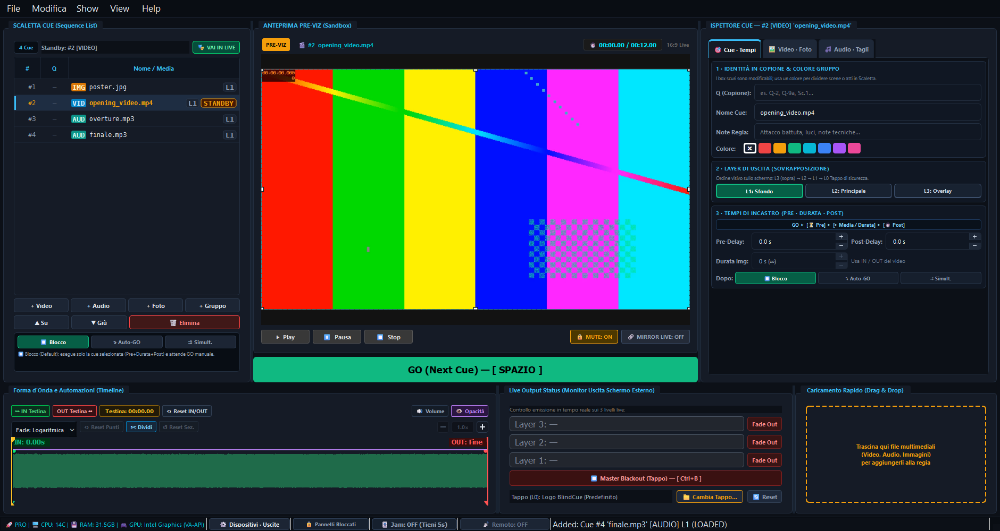
- Scaletta cue (colonna sinistra) – l'ordine dello spettacolo. Ogni riga è una
cue: video
VID, audio AUD, immagine IMG oppure
gruppo GRP; le didascalie hanno l'icona 📝. Sotto la scaletta ci sono i pulsanti
+ Video / + Audio / + Foto / + Testo / + Gruppo,
Su / Giù per spostare ed Elimina.
- Anteprima Pre-Viz (al centro) – un'anteprima privata solo per te. Il pubblico non la vede.
Play / Pausa / Stop provano la cue selezionata.
- Il grande pulsante verde GO – lancia la cue successiva (come Spazio).
- Ispettore cue (colonna destra) – tutte le impostazioni della cue selezionata, nelle schede
Cue · Tempi, Video · Foto, Audio · Tagli.
- Forma d'Onda e Automazioni (in basso a sinistra) – l'onda sonora con i punti IN/OUT,
la curva del volume e le sezioni.
- Live Output Status (in basso al centro) – cosa sta andando sui layer 1–3, con i pulsanti
Fade Out e Master Blackout.
- Caricamento Rapido (in basso a destra) – trascina qui i file dal gestore file.
- Barra in basso – profilo hardware, Dispositivi · Uscite, blocco pannelli,
modalità Jam, telecomando e messaggi del programma.
💡 La lingua del programma si cambia in View → 🌐 Lingua / Language / Język
(vale dal riavvio successivo). Questo manuale si apre nella lingua del programma.
2. Nuovo spettacolo e salvataggio
- File → New Show (Ctrl+N) – una scaletta vuota.
- File → Save Show (Ctrl+S) / Save Show As…
(Ctrl+Shift+S) – salva un file
.blindcue.
- Al salvataggio il programma chiede se copiare i file audio/video nella cartella dello show:
- Sì – ottieni una cartella portatile; lo spettacolo si apre su un altro computer
(per esempio da una chiavetta USB). Consigliato prima della replica.
- No – salva solo i percorsi dei tuoi file (meno spazio, ma i file devono
restare dove sono).
I file originali non vengono mai modificati.
- File → Apri recenti – per tornare velocemente agli spettacoli precedenti.
- Il programma fa un salvataggio automatico. Dopo un crash propone di ripristinare la sessione.
- Modifica → Annulla / Ripeti (Ctrl+Z / Ctrl+Y) valgono per ogni
modifica nella scaletta e nell'ispettore.
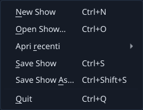
3. Aggiungere video, audio, foto e didascalie
Tre modi per aggiungere un file
- I pulsanti sotto la scaletta: + Video, + Audio, + Foto.
- Trascina i file dal gestore file nel riquadro Caricamento Rapido (in basso a destra).
- La nuova cue va in fondo alla scaletta; spostala con Su / Giù
(Alt+↑ / Alt+↓).
| Video | MP4, MKV, AVI, MOV, WEBM |
| Audio | MP3, WAV, FLAC, OGG, AAC, M4A |
| Foto | PNG, JPG, BMP, GIF, WEBP |
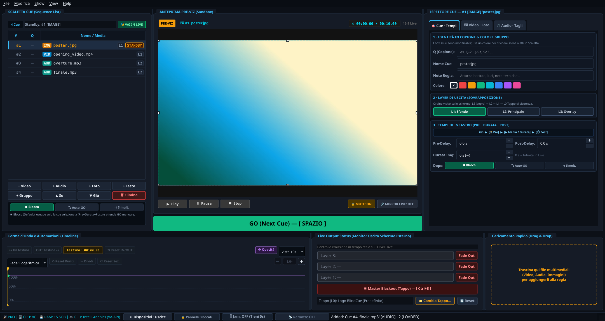
Foto
Di norma una foto resta sullo schermo finché qualcosa non la sostituisce: la cue
successiva sullo stesso layer oppure Fade Out. Il tempo di visualizzazione si imposta
nell'Ispettore: Cue · Tempi → Durata Img (per esempio 10 s; 0 = senza limite).
Per una sequenza di foto usa più cue di seguito con Auto-GO
(capitolo 4) oppure un gruppo.
Didascalie (testo sullo schermo)
- Premi + Testo sotto la scaletta.
- Scrivi il testo (Invio = nuova riga), imposta Dimensione carattere, Colore del testo,
Posizione sullo schermo (in basso / al centro / in alto) e se vuoi la
Fascia scura dietro il testo e l'Ombra. In fondo alla finestra vedi subito
l'anteprima di quello che apparirà sul proiettore.
- OK – nella scaletta compare una cue con l'icona 📝. Viene messa sul layer
L3: Overlay (la didascalia sta sopra video e foto) con dissolvenze morbide
(Fade In / Out 0,5 s).
- Per cambiare il testo: clic destro sulla cue → ✏ Modifica testo….
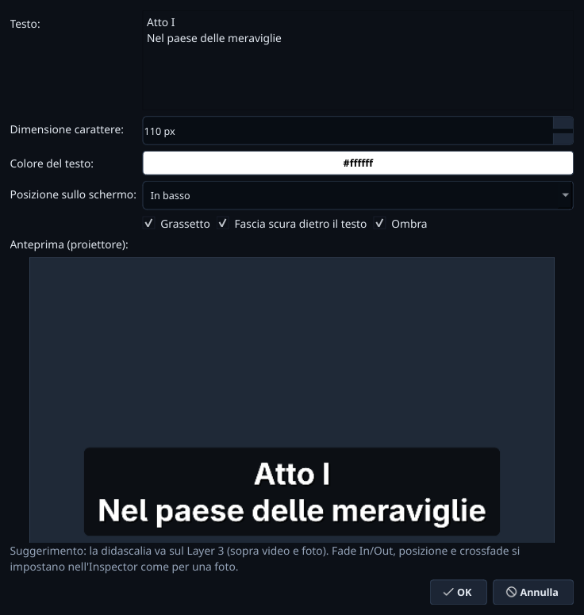
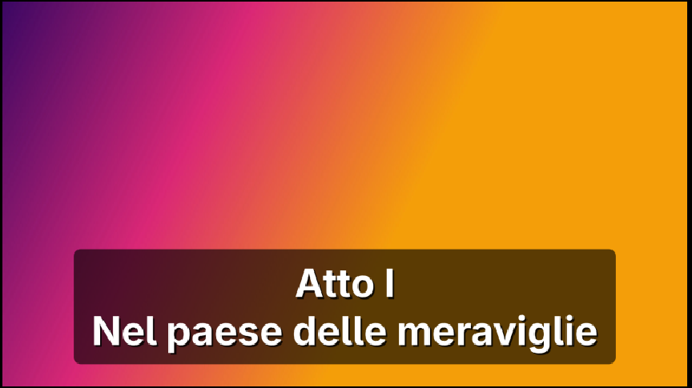
La didascalia si comporta come una foto: nell'Ispettore cambi posizione, scala, opacità,
durata (Durata Img, 0 = fino alla dissolvenza), dissolvenze e crossfade.
La didascalia è salvata nel file dello spettacolo e viene ricreata su un altro computer.
Una didascalia insieme alla musica (o a un video)
- Nella scaletta metti prima la cue della musica e subito sotto la cue della didascalia.
- Seleziona la cue della musica e nell'Ispettore scegli Dopo: Simult.
Un solo Spazio avvia la musica e mostra subito la didascalia.
- Nella cue della didascalia imposta Durata Img, per esempio la durata della canzone, e la
didascalia sparisce da sola. Oppure lascia 0 e chiudila con Fade Out accanto al layer 3.
💡 Lo stesso vale per un video: video su L1, didascalia su L3, Simult.
sulla cue del video. Puoi anche selezionare le due cue e raggrupparle (Ctrl+G) in
modalità Simultaneo.
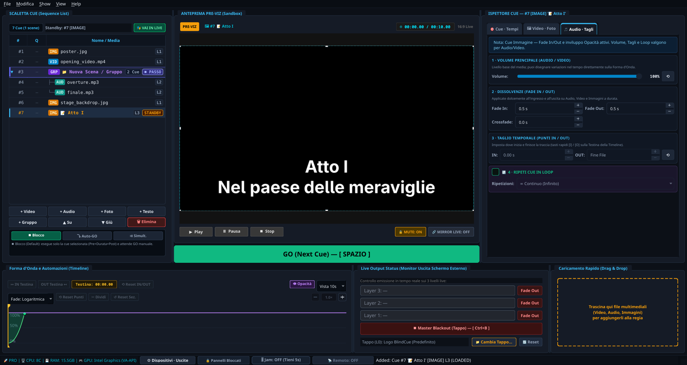
4. Impostare una cue (Ispettore)
Fai clic su una cue nella scaletta: l'Ispettore a destra mostra le sue impostazioni.
Puoi anche selezionare più cue dello stesso tipo (Ctrl/Shift+clic)
e modificarle tutte insieme.
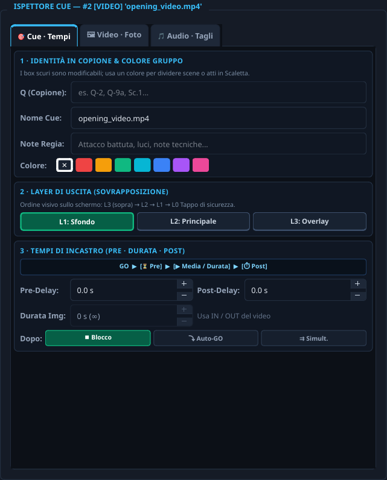
La scheda "Cue · Tempi"
- Q (Copione) – il tuo riferimento dal copione, per esempio
Q-5 o
Sc.2. Resta legato alla cue anche se cambi l'ordine.
- Nome Cue – la descrizione che si vede nella scaletta (per esempio "Entra il coro").
- Note Regia – un promemoria per l'operatore, per esempio "dopo la battuta: e allora si spense la luce".
Si vede in modalità LIVE.
- Colore – colora scene e atti per rendere la scaletta più leggibile.
- Layer di uscita L1 / L2 / L3 – vedi il capitolo 8.
- Pre-Delay – quanti secondi aspettare dopo il GO prima che la cue parta.
- Post-Delay – quanti secondi aspettare dopo la fine della cue (conta con Auto-GO).
- Durata Img – per quanto tempo resta visibile una foto (0 = senza limite).
- Dopo – cosa succede dopo questa cue:
- Blocco (predefinito) – aspetta il tuo GO successivo.
- Auto-GO – dopo Pre + durata + Post lancia da sola la cue successiva
(per esempio finisce una canzone e parte subito un video).
- Simult. – al GO parte subito anche la cue successiva
(per esempio una foto e la musica insieme).
Le stesse tre modalità sono sotto la scaletta (Blocco / Auto-GO / Simult.).
- ⛔ Esclusiva – finché questa cue è in onda il GO manuale viene rifiutato (anche da remoto), così un GO dato per errore non la copre; Ctrl+Spazio forza comunque il GO. Attenzione alle immagini senza durata – restano finché non le fermi.
5. Dissolvenze, crossfade, effetti e immagine
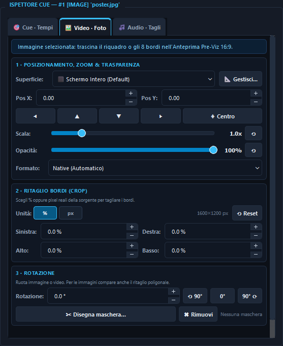
Dissolvenze (entrata e uscita)
- Scheda Audio · Tagli → 2 · Dissolvenze: Fade In (dal nero / dal silenzio)
e Fade Out (verso il nero / il silenzio) in secondi. Vale per video, audio
e foto.
- La forma della rampa si sceglie sotto la forma d'onda: Fade: Logaritmica
(la più naturale per l'audio), S-Curve Morbida oppure Lineare.
Crossfade tra le cue
Con il Crossfade l'immagine precedente si scioglie dolcemente nella successiva,
senza passare dal nero – foto in foto, foto in video, video in video.
- Seleziona la cue che deve entrare (per esempio la seconda foto).
- Scheda Audio · Tagli → 2 · Dissolvenze → campo Crossfade:
scrivi un tempo, per esempio 2 s.
- Imposta su quella cue Fade In = 0 (il crossfade sostituisce l'entrata dal nero).
- Le due cue devono stare sullo stesso layer (di solito L1). Al GO l'immagine che
era su quel layer si fonde nella nuova.
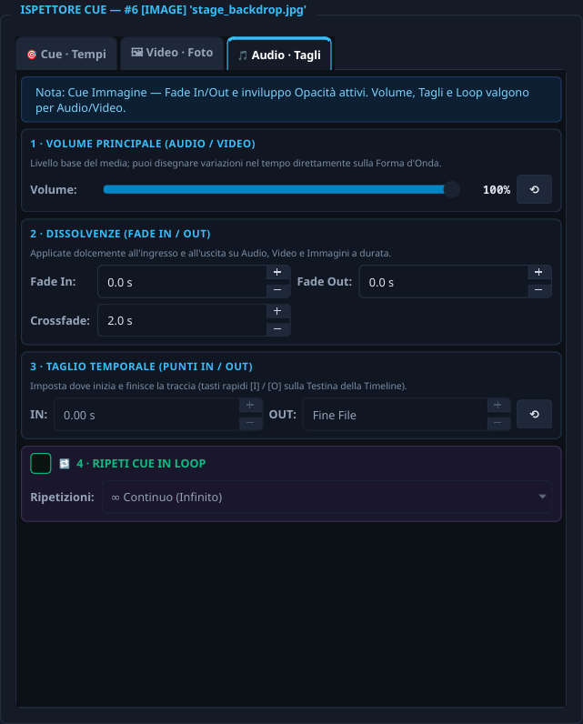
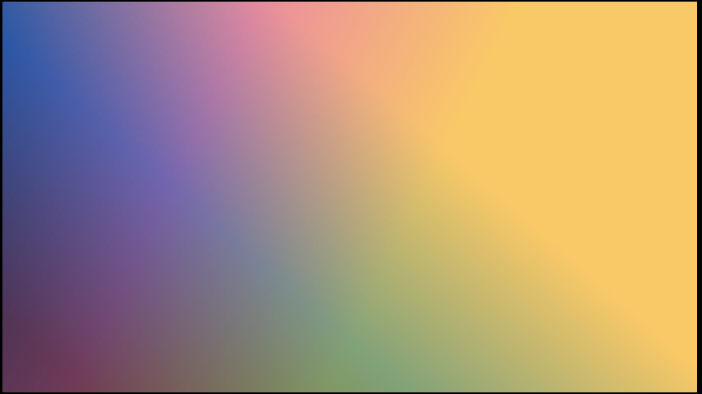
💡 Una sequenza di foto con crossfade: più foto di seguito su L1, ognuna con
Crossfade 1–2 s, Durata Img per esempio 5 s e Dopo: Auto-GO – le foto
cambiano da sole, in modo morbido.
Il crossfade riguarda l'immagine. L'audio del video precedente si interrompe
nel momento del passaggio – se deve sfumare, dagli un Fade Out oppure metti la musica in una cue separata.
Immagine (la scheda "Video · Foto")
- Pos X / Y e le frecce – spostano l'immagine; Centro la riporta al centro.
- Scala – ingrandisce / rimpicciolisce (per esempio una finestrella in un angolo).
- Opacità – trasparenza (per esempio 50% = immagine semitrasparente sullo sfondo).
- Formato – forza 16:9, 4:3, 21:9 oppure 1:1.
- Ritaglio bordi (crop) – togli bande nere o una parte dell'inquadratura, in % o in pixel.
- Rotazione – di un angolo qualsiasi o a passi di 90°.
- Disegna maschera… (solo foto) – ritaglia una forma qualsiasi cliccando i punti;
Bordo sfumato ammorbidisce il contorno.
- Puoi anche trascinare la cornice dell'immagine con il mouse nell'anteprima Pre-Viz.
- MIRROR LIVE (sotto l'anteprima) – quando è attivo, le modifiche di posizione e ritaglio
si vedono subito sul proiettore. Usalo per sistemare l'immagine in prova;
durante lo spettacolo tienilo spento.
Curve nel tempo (automazione)
Nel pannello Forma d'Onda scegli Volume oppure Opacità e fai clic sulla linea
per aggiungere punti – per esempio abbassa la musica durante un dialogo e rialzala dopo.
Reset Punti cancella la curva.
6. Audio: volume, tagli, loop, livellamento
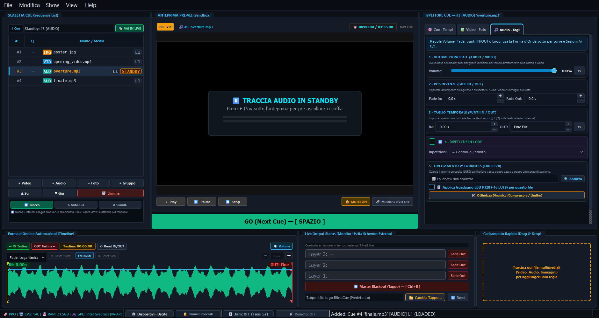
- Volume – cursore 0–100% (scheda Audio · Tagli).
- Taglio IN / OUT – da dove a dove suonare il brano.
Il modo più comodo: nel pannello Forma d'Onda fai clic su un punto dell'onda, poi
IN Testina (I) oppure OUT Testina (O).
Reset IN/OUT ripristina il file intero. I video si tagliano allo stesso modo.
- Ripeti cue in loop – spunta e scegli il numero di ripetizioni oppure "infinito"
(per esempio la musica di sottofondo durante l'intervallo).
- Dividi – divide il file in sezioni A, B, C… (per esempio strofa / ritornello). Ogni sezione
può ripetersi; Esci Loop passa alla successiva.
- Livellamento (EBU R128): Analizza misura il volume percepito del brano e
Applica Guadagno EBU R128 lo allinea agli altri (così un brano non è molto più
forte degli altri). Ottimizza Dinamica aiuta con i file registrati male.
- Modalità Jam / Contest (barra in basso, tieni premuto 5 s) – livella tutti i file insieme.
- Pre-ascolto in cuffia: in Dispositivi · Uscite scegli un'uscita separata
per la cuffia; allora Play nell'anteprima suona solo in cuffia.
7. Gruppi e scene
Un gruppo raccoglie più cue in una riga richiudibile – per esempio "Atto 1" o "Sequenza foto".
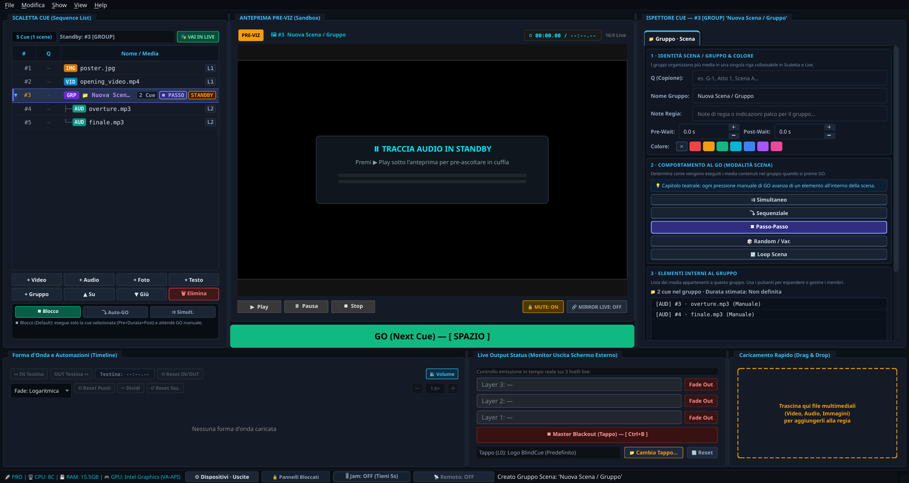
- Seleziona alcune cue e premi + Gruppo (Ctrl+G).
Per sciogliere il gruppo: Ctrl+Shift+G.
- Seleziona il gruppo – nell'Ispettore scegli cosa fa il GO:
- Simultaneo – tutti gli elementi partono insieme.
- Sequenziale – un solo GO esegue tutta la sequenza, un elemento dopo l'altro.
- Passo-Passo – ogni GO avanza di un elemento nel gruppo.
- Random / Var. – un elemento a caso (mai lo stesso due volte di fila).
- Loop Scena – gli elementi girano in tondo finché non li fermi.
- Apri Studio Timeline del Gruppo – mostra gli elementi su 3 tracce con un righello;
trascinando i blocchi decidi quando entra ciascuno (per esempio musica, dopo 3 s il video, dopo 10 s una foto).
8. Layer L1–L3 e Tappo L0
L'immagine è fatta di layer sovrapposti:
| L3 – Overlay | in cima: didascalie, loghi, finestrelle |
| L2 – Principale | in mezzo |
| L1 – Sfondo | in basso: video o foto di sfondo (predefinito) |
| L0 – Tappo | sempre sotto; si vede quando non va niente |
- Una nuova cue sullo stesso layer sostituisce la precedente. Una cue su un layer
diverso si sovrappone.
- Vale anche per l'audio: musica e foto sullo stesso layer si spengono a vicenda.
Per questo le nuove cue audio vanno di default su L2, foto e video su L1.
- Il tappo si cambia con Show → Imposta Immagine di Tappo (Layer 0)… oppure con il pulsante
Cambia Tappo… – per esempio la locandina dello spettacolo o il nero.
Il tappo predefinito è un pannello con il logo e una griglia per allineare il proiettore.
9. Proiettore e finestra di uscita
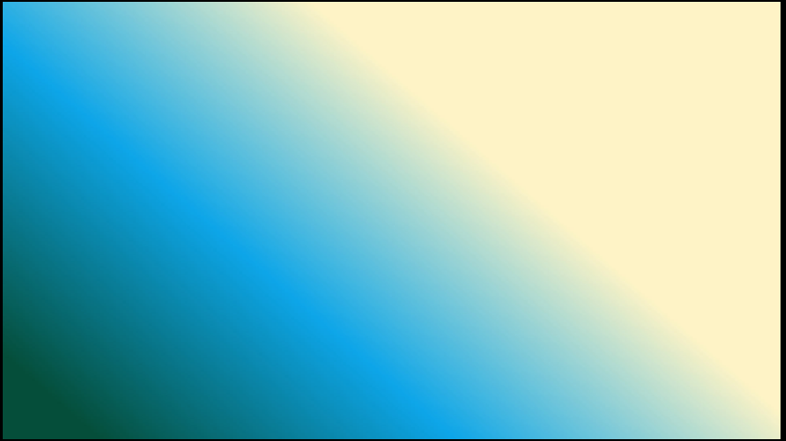
- Collega il proiettore (HDMI) e imposta nel sistema un desktop esteso
(Windows: Win+P → Estendi).
- Il programma riconosce da solo il secondo schermo e ci mostra l'immagine
a schermo intero, senza bordi né cursore. Il tuo monitor resta per te.
- Con un solo monitor l'immagine compare in una piccola finestra
"Live Output [Monitor Simulato]". Fai clic sulla finestra e premi F11
per vederla a schermo intero; F11 di nuovo torna alla finestra.
- Schermo e modalità si scelgono in Show → Dispositivi & Hardware
(oppure Dispositivi · Uscite nella barra in basso) → Schermo Live Output.
Con due proiettori puoi avere un'unica immagine distesa su entrambi oppure due
uscite indipendenti A e B.
- Lì scegli anche l'uscita audio (casse della sala) e l'eventuale cuffia.
- Il programma ricorda le casse scelte su questo computer (non nel file dello spettacolo).
Se mancano – per esempio scollegando un proiettore con casse – suona l'uscita predefinita del sistema
e la barra di stato lo segnala; quando vengono ricollegate il programma torna a usarle da solo.
"Predefinito di sistema, segue il sistema" vuol dire: non ricordare nulla, suona dove indica il sistema.
- Quando resta solo il proiettore (Win+P → Solo secondo schermo, o il portatile
chiuso), il programma vi mostra la finestra di regia e l'anteprima dell'uscita in finestra.
- View → Mostra Guide sul Proiettore Live (Shift+F7) –
una griglia per mettere a fuoco e allineare il proiettore.
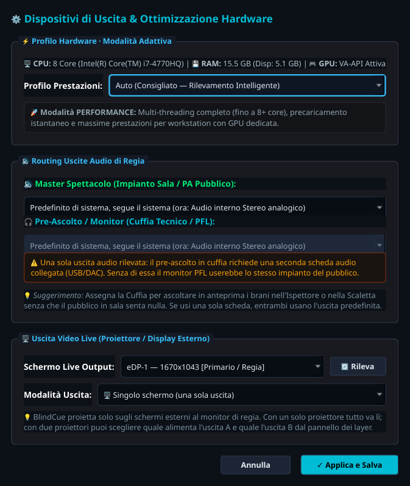
10. Condurre lo spettacolo (modalità LIVE)
Quando la scaletta è pronta, passa in modalità LIVE: pulsante VAI IN LIVE oppure
F5. Lo schermo diventa semplice e grande – solo ciò che serve durante lo spettacolo.
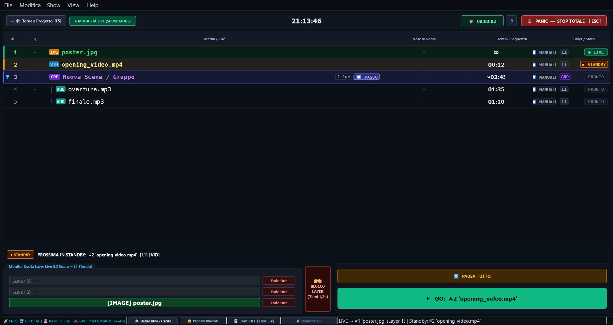
- Seleziona la prima cue – riceve il bollino STANDBY (pronta a partire).
In basso vedi PROSSIMA IN STANDBY con il nome e le note.
- Premi Spazio (o il grande pulsante GO) – la cue parte, riceve il bollino
LIVE e lo STANDBY passa alla successiva.
- Ogni Spazio successivo = il punto successivo dello spettacolo. Una seconda pressione entro 0,4 s viene ignorata – protezione dal doppio GO.
- ↑ / ↓ cambiano la cue successiva (per esempio per saltare qualcosa).
Un doppio clic su una riga la rende solo la prossima cue (la lanci con Spazio); per lanciarla subito, clic destro → Fai partire subito questa Cue.
- Il pannello Monitor Uscita Layer Live mostra cosa va su L1–L3; Fade Out
chiude dolcemente quel layer (tienilo premuto un attimo – protezione dai clic accidentali).
- Il Cronometro Spettacolo (in alto) parte da solo al primo GO.
- Torna a Progetto (F5) – torni alla modifica; quello che sta andando continua.
💡 Durante lo spettacolo tieni attiva la finestra del programma (facci clic) perché
Spazio arrivi al programma. Chiudi gli altri programmi. Quando la tastiera va altrove (per esempio dopo un clic sull’immagine del proiettore), in modalità LIVE compare una barra rossa – fai clic sulla finestra del programma.
💡 Anche un telefono può fare da telecomando – vedi il capitolo 12.
11. Emergenze
| PAUSA TUTTO | congela tutto (audio, video, tempi); un secondo
clic riprende dallo stesso punto – per esempio mentre un attore aspetta l'applauso. |
| Fade Out (accanto a un layer) | chiude dolcemente solo quel layer. |
| Master Blackout Ctrl+B | sfuma tutto e mostra il tappo. |
| DISSOLVI Shift+Esc | audio e immagine su tutti i layer sfumano insieme (1 s) e si fermano – un PANIC più calmo. Dopo DISSOLVI e dopo PANIC il prossimo GO riparte dalla prima cue fermata, così un GO dato troppo presto si può semplicemente ripetere. |
| PANIC Esc due volte entro 0,6 s (in modalità LIVE) | taglia tutto all'istante (0 ms) – ultima risorsa. |
| Blocco layer | in modalità LIVE i comandi dei layer sono bloccati;
tieni premuto il lucchetto 1,2 s per sbloccare scorrimento e pausa dei singoli layer. |
12. Extra: telecomando dal telefono, mapping, impostazioni
Telecomando dal telefono (Wi-Fi)
Show → Controllo Remoto LAN (Web & OSC) (F8) → avvia i servizi
e inquadra il codice QR con il telefono (telefono e computer sulla stessa rete Wi-Fi).
Sul telefono compaiono un grande pulsante GO, pausa, blackout e PANIC.
Il secondo codice (Monitor Regista) dà una vista di sola lettura – per esempio per il regista
in platea. L'accesso è protetto da un PIN di 6 cifre.
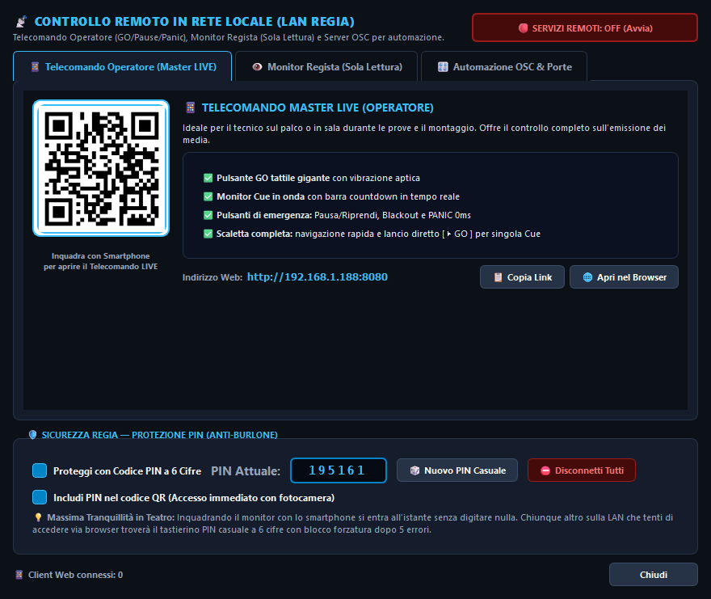
Studio Superfici di Proiezione & Mapping – F7
Quando il proiettore è storto o proietti su uno schermo particolare: correzione trapezoidale
(4 angoli), schermi virtuali aggiuntivi (per esempio un'immagine solo su una colonna della scenografia),
maschere circolari e ritagli. Le cue si assegnano a una superficie nell'Ispettore
(Video · Foto → Superficie).
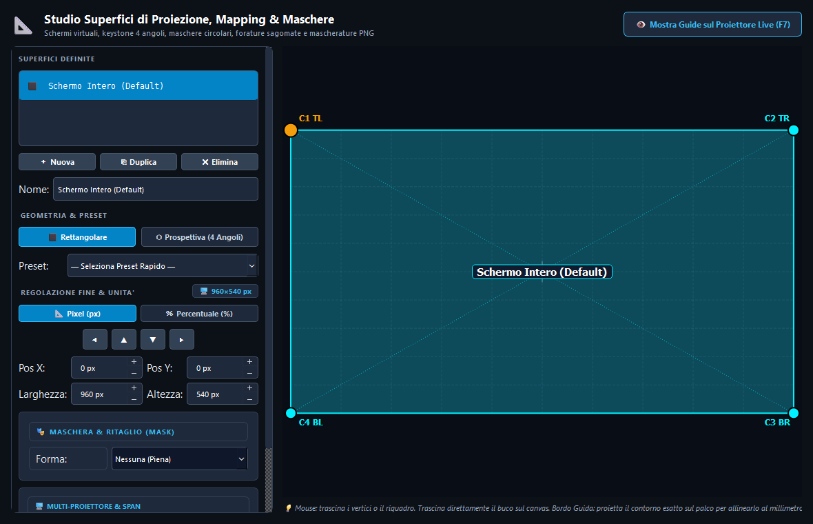
Altro
- View → Tema Interfaccia – i colori del programma (anche una versione in bianco e nero).
- View → Segnali Acustici Operatore – un leggero "bip" a ogni GO/STOP/PAUSA.
- View → Blocca Larghezza Pannelli – protegge la disposizione da spostamenti accidentali.
- Barra in basso, ECO / STD / PRO – profilo di prestazioni (ECO su un computer più lento).
13. Scorciatoie da tastiera
| Spazio | GO – cue successiva |
| ↑ ↓ | scegli la cue / cambia la successiva in LIVE |
| F5 | modalità LIVE / ritorno al progetto |
| Esc ×2 | PANIC (in modalità LIVE): due volte entro 0,6 s |
| Shift+Esc | dissolvenza totale (1 s) |
| Ctrl+Spazio | GO forzato – anche mentre va una cue esclusiva |
| Ctrl+B | master blackout (tappo) |
| Ctrl+G / Ctrl+Shift+G | raggruppa / separa |
| Alt+↑ Alt+↓ | sposta la cue |
| Canc | elimina la cue |
| I / O | punto IN / OUT sulla testina |
| Ctrl+Z / Ctrl+Y | annulla / ripeti |
| Ctrl+S | salva |
| F7 / Shift+F7 | studio superfici / guide sul proiettore |
| F8 | controllo remoto |
| F11 (nella finestra di uscita) | finestra di uscita a schermo intero con un solo monitor |
| F1 | questo manuale |
14. Buone pratiche prima dello spettacolo
- Fai una prova generale sullo stesso computer e lo stesso proiettore, dalla prima
all'ultima cue.
- Converti i video pesanti. Su un computer più lento un video preso direttamente dalla
fotocamera o dal telefono (bitrate molto alto) può scattare. Una versione Full HD a circa
8–10 Mb/s sul proiettore è identica e scorre fluida.
- Salva lo spettacolo copiando i file e tienine una copia su una chiavetta USB.
- Scrivi nelle Note Regia dopo quale battuta parte ogni cue.
- Spegni MIRROR LIVE, chiudi gli altri programmi, disattiva le notifiche e la
sospensione dello schermo nel sistema.
- Imposta un tappo (locandina o nero) così il pubblico non vede mai il desktop prima dell'inizio.
Manuale per BlindCue 0.1.